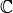
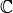
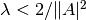

About ODL¶
Operator Discretization Library (ODL) is a Python library for fast prototyping focusing on (but not restricted to) inverse problems. ODL is being developed at KTH Royal Institute of Technology, Stockholm, and Centrum Wiskunde & Informatica (CWI), Amsterdam.
The main intent of ODL is to enable mathematicians and applied scientists to use different numerical methods on real-world problems without having to implement all necessary parts from the bottom up.
This is reached by an Operator structure which encapsulates all application-specific parts, and a high-level formulation of solvers which usually expect an operator, data and additional parameters.
The main advantages of this approach is that
- Different problems can be solved with the same method (e.g. TV regularization) by simply switching operator and data.
- The same problem can be solved with different methods by simply calling into different solvers.
- Solvers and application-specific code need to be written only once, in one place, and can be tested individually.
- Adding new applications or solution methods becomes a much easier task.
ODL implements many abstract mathematical notions such as sets, vector spaces and operators. In the following, a few are shown by example.
Set¶
A Set is the fundamental building block of ODL objects. It mirrors the mathematical concept of a set in that it can tell if an object belongs to it or not:
>>> interv = odl.IntervalProd(0, 1)
>>> 0.5 in interv
True
>>> 2.0 in interv
False
The most commonly used sets in ODL are RealNumbers (set of all real numbers) and IntervalProd (“Interval product”, rectangular boxes of arbitrary dimension).
LinearSpace¶
The LinearSpace class is the most important subclass of Set.
It is a general (abstract) implementation of a mathematical vector space and has a couple of widely used concrete realizations.
Spaces of n-tuples¶
Large parts of basic functionality, e.g. arithmetic or inner products, rest on array computations, i.e. computations on tuples of elements of the same kind.
Typically, these vector spaces are of the type  , where
, where  is a field (usually
is a field (usually  or ), and
or ), and  a positive integer.
Example:
a positive integer.
Example:
>>> c3 = odl.cn(3)
>>> u = c3.element([1 + 1j, 2 - 2j, 3])
>>> v = c3.one() # vector of all ones
>>> u.inner(v) # sum of the elements
(6-1j)
Function spaces¶
A function space is a set of functions  with fixed domain and range (more accurately: codomain), where
with fixed domain and range (more accurately: codomain), where  is a vector space.
The ODL implementation
is a vector space.
The ODL implementation FunctionSpace covers only the cases or since the general case has large overlaps with Operator.
Note that we do not make a distinction between different types of function spaces with respect to regularity, integrability etc. on an abstract level since there is no obvious way to check it.
As linear spaces, function spaces support some interesting operations:
>>> import numpy as np
>>> space = odl.FunctionSpace(odl.IntervalProd(0, 2))
>>> exp = space.element(np.exp)
>>> exp(np.log(2))
2.0
>>> exp_plus_one = exp + space.one()
>>> exp_plus_one(np.log(2))
3.0
>>> ratio_func = exp_plus_one / exp # x -> (exp(x) + 1) / exp(x)
>>> ratio_func(np.log(2)) # 3 / 2
1.5
A big advantage of the function space implementation in ODL is that the evaluation of functions is vectorized, i.e. that the values of a function can be computed from an array of input data “at once”, without looping in Python (which is slow, in general). What follows is a simple example, see the Vectorized functions guide for instructions on how to write vectorization-compatible functions.
>>> import numpy as np
>>> space = odl.FunctionSpace(odl.IntervalProd(0, 2))
>>> exp = space.element(np.exp)
>>> exp([0, 1, 2])
array([ 1. , 2.71828183, 7.3890561 ])
>>> x = np.linspace(0, 2, 1000)
>>> y = exp(x) # works
Discretizations¶
A discretization typically represents the finite-dimensional, concrete counterpart of an infinite-dimensional, abstract vector space, which makes it accessible to computations.
In ODL, a Discretization instance encompasses both continuous and discrete spaces as well as the mappings take one into the other.
The canonical example is the space of real-valued square-integrable functions on a rectangular domain (we take an interval for simplicity).
It is the default in the convenience function uniform_discr:
>>> l2_discr = odl.uniform_discr(0, 1, 5) # Omega = [0, 1], 5 subintervals
>>> type(l2_discr)
odl.discr.lp_discr.DiscreteLp
>>> l2_discr.exponent
2.0
>>> l2_discr.domain
IntervalProd(0.0, 1.0)
Discretizations have a large number of useful functionality, for example the direct and vectorized sampling of continuously defined functions.
If we, for example, want to discretize the function f(x) = exp(-x), we can simply pass it to the element() method:
>>> exp_discr = l2_discr.element(lambda x: np.exp(-x))
>>> type(exp_discr)
odl.discr.lp_discr.DiscreteLpElement
>>> print(exp_discr)
[ 0.90483742, 0.74081822, 0.60653066, 0.4965853 , 0.40656966]
>>> exp_discr.shape
(5,)
Operators¶
This is the central class and general notion in ODL.
The concept is derived from the mathematical theory of operators and implements many of its core properties.
Any functionality that is implemented as an Operator has access to the full machinery of operator arithmetic, composition, differentiation and much more.
It is the universal interface between application-specific code (e.g. line projectors in tomography for a given geometry) and other parts of the library that are written in an abstract mathematical language.
The large benefit of this approach is that once an operator is fully implemented and functional, it can be used seamlessly by, e.g., optimization routines that expect an operator and data (among others) as input.
As a small example, we study the problem of solving a linear system with 2 equations and 3 unknowns. We use Landweber’s method to get a least-squares solution and plot the intermediate residual norm. The method needs a relaxation  to converge - in our case, the right-hand side is 0.14, so we choose 0.1.
>>> matrix = np.array([[1.0, 3.0, 2.0],
... [2.0, -1.0, 1.0]])
>>> matrix_op = odl.MatrixOperator(matrix) # operator defined by the matrix
>>> matrix_op.domain
rn(3)
>>> matrix_op.range
rn(2)
>>> data = np.array([1.0, -1.0])
>>> niter = 5
>>> reco = matrix_op.domain.zero() # starting with the zero vector
>>> for i in range(niter):
... residual = matrix_op(reco) - data
... reco -= 0.1 * matrix_op.adjoint(residual)
... print('{:.3}'.format(residual.norm()))
1.41
0.583
0.24
0.0991
0.0409
If we now exchange matrix_op and data with a tomographic projector and line integral data, not a single line of code in the reconstruction method changes since the operator interface is exactly the same.
Further features¶
- A unified structure
Geometryfor representing tomographic acquisition geometries - Interfaces to fast external libraries, e.g. ASTRA for X-ray tomography, pyFFTW for fast Fourier transforms, …
- A growing number of “must-have” operators like
Gradient,FourierTransform,WaveletTransform - Several solvers for variational inverse problems, ranging from simple
gradient methodsto state-of-the-art non-smooth primal-dual splitting methods likeDouglas-Rachford - Standardized tests for the correctness of implementations of operators and spaces, e.g. does the adjoint operator fulfill its defining relation?
- CUDA-accelerated data containers as a replacement for Numpy